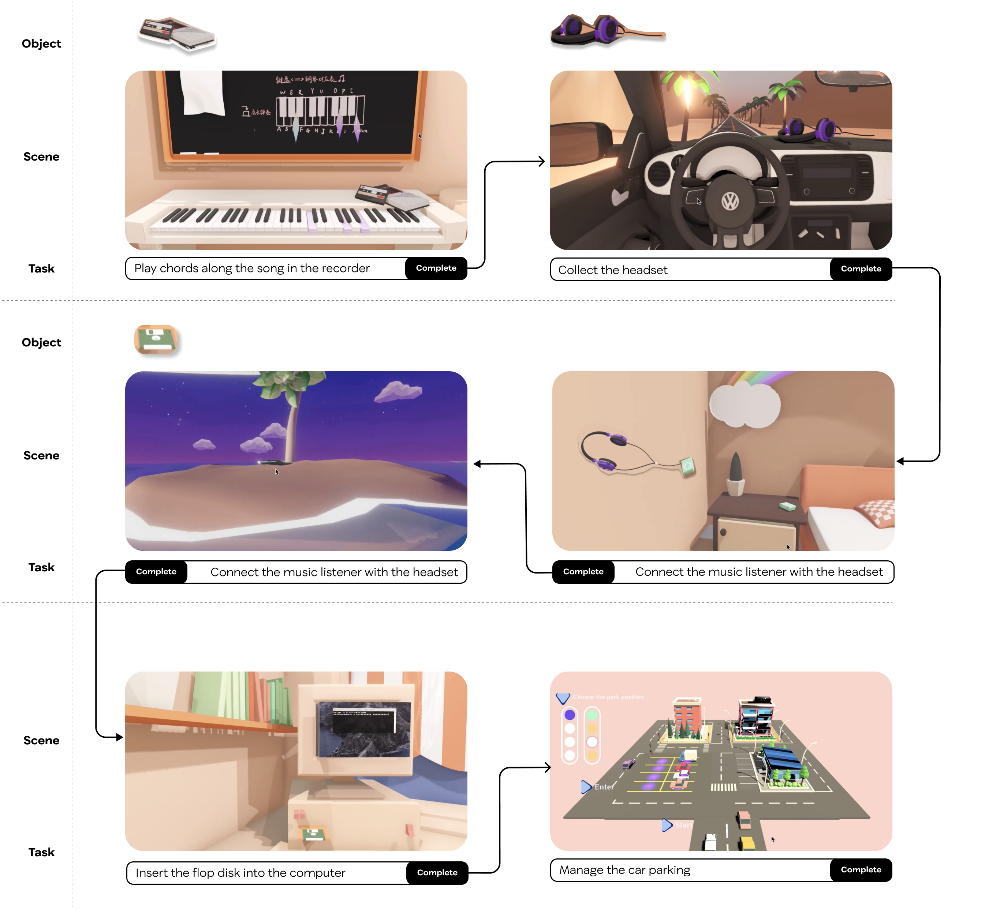

Daydream
Overview
This game project was completed from early March until the summer of 2020, during which I viewed this mini-game as an expression of and reflection on quarantine life. I was also exploring whether such a game could serve as a healing approach, providing a way out for both myself and a broader audience. I began the concepting process by imagining what would make me feel good through sketching, then narrowing down the plot, experience design, and the visual and audio components. During prototyping, I created 3D models and programmed them to be interactive in the Unity engine. By creating this mini-game, I envision it as an embodiment of my inner world, allowing me to engage my mind in wandering through an interactive format—through the game, I revisited my beautiful past memories, embarked on fantasy adventures, and addressed my real-life problems. During gameplay testing, participants mentioned that they could project themselves into the game due to similar experiences, and they expressed a wish to have their own versions of an 'inner world' room, which definitely could be achieved through the customization power of technology.
Concept
I started by freely sketching and drawing my imagination of How I could escape from a caged life? Reflecting on what I had written down and sketched, I realized I am able to escape from an 'unideal' reality by (1) revisiting beautiful past memories; (2) imagining a dreamy fantasy adventure; and (3) envisioning a solution to resolve real-life struggles.

Interaction Design
To connect with three main experience from the concepting, I decided to use the 'inventory system', where players need to collect objects and complete a task corresponding to the object from the previous scene, in order to activate the travel. The following chart shows the game flow with conditions of collecting what objects and completing what tasks.

Here, I use music as a glue to connect all the levels, because music itself is a way to heal. In this game, the music not only acts as a background component; instead, I designed the game with many interactive music experiences, such as playing music tapes, pressing keyboards to play piano chords, and experiencing a road trip music journey.